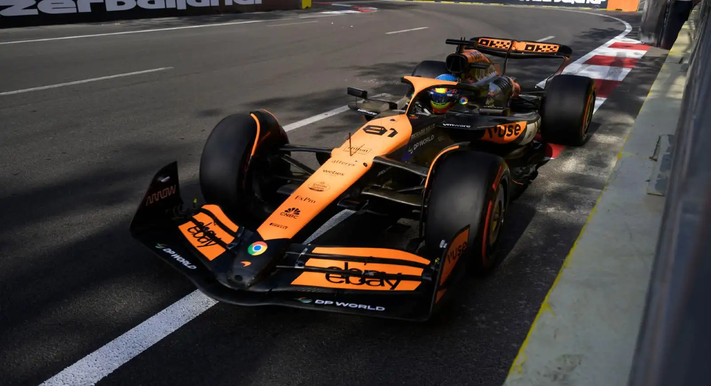
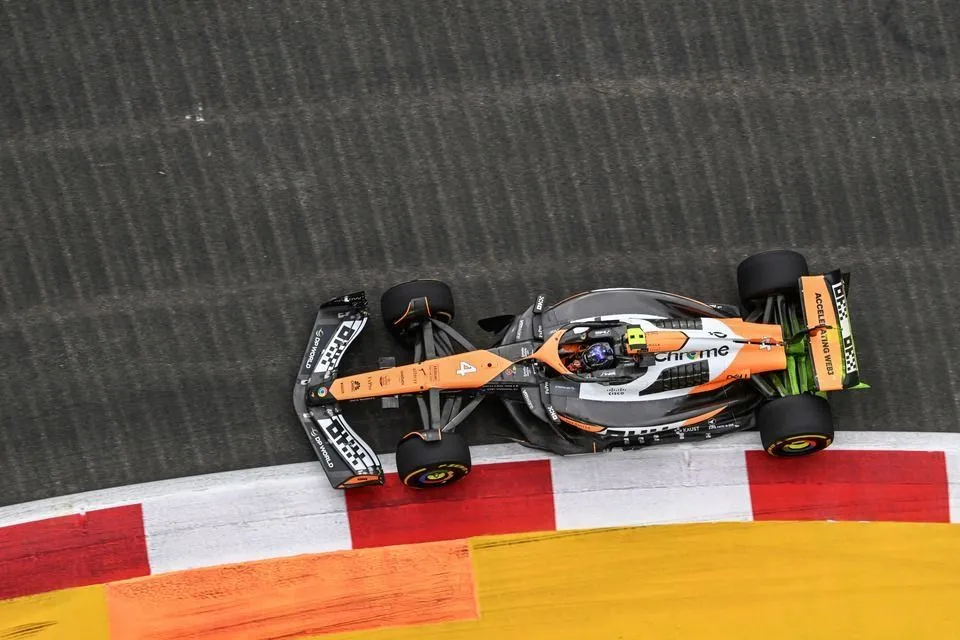
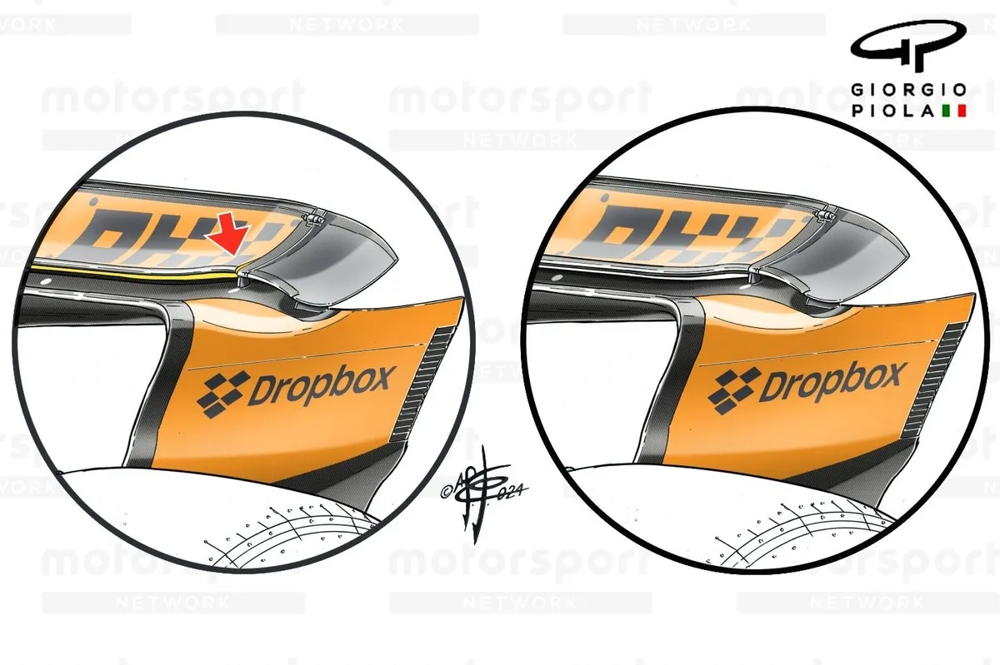
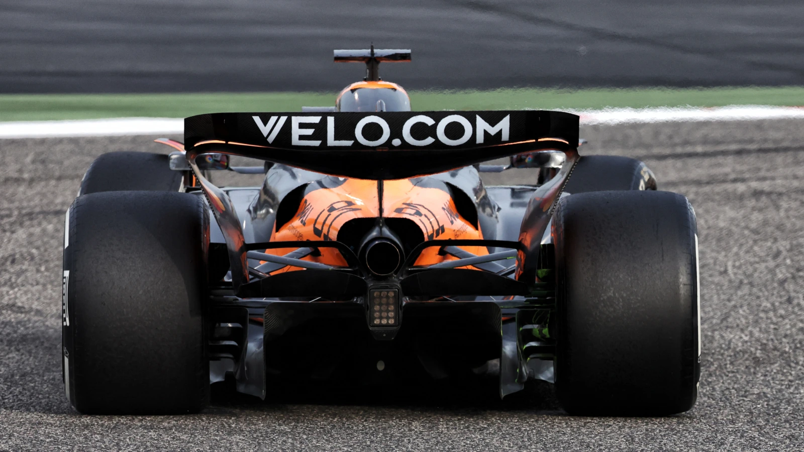
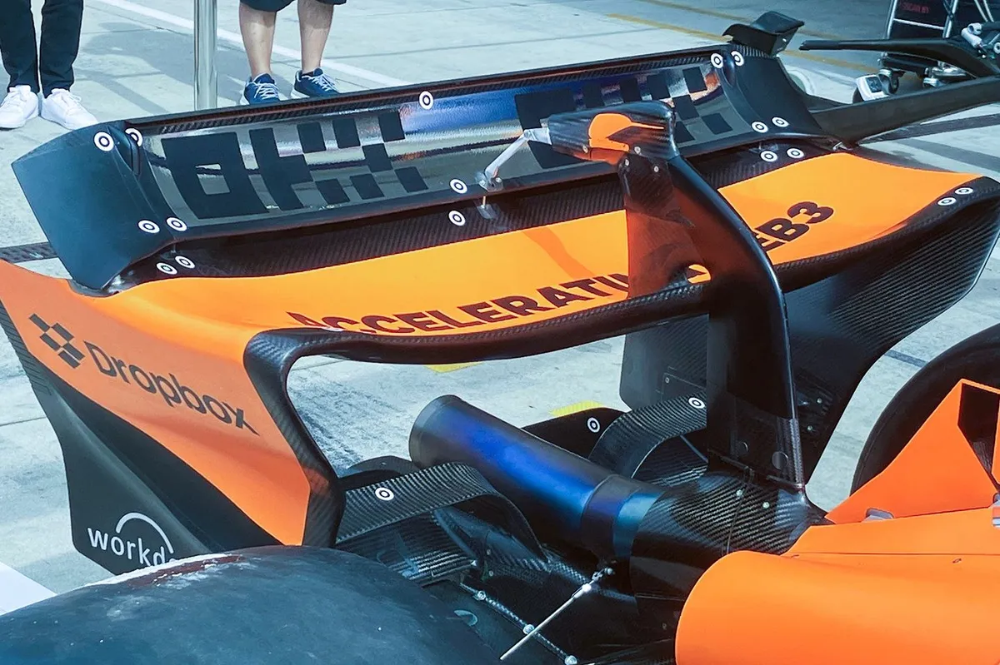
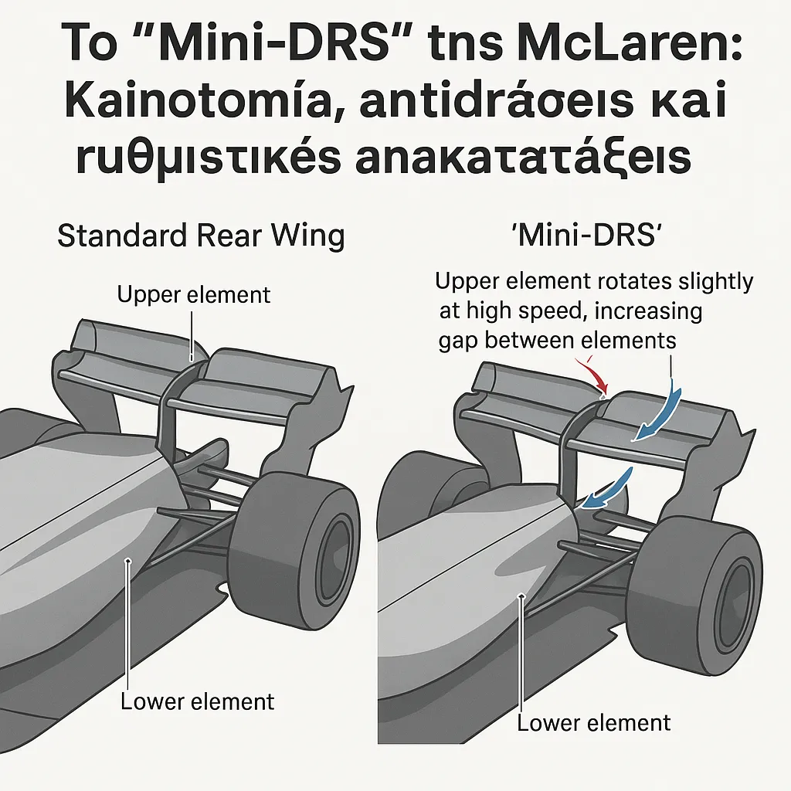

Καινοτομία, Αντιδράσεις και Ρυθμιστικές Ανακατατάξεις στη Formula 1
Κατά τη διάρκεια της σεζόν 2024, η McLaren τάραξε τα νερά παρουσιάζοντας μια επαναστατική λύση στην πίσω πτέρυγα του μονοθεσίου της — ένα σύστημα που γρήγορα έγινε γνωστό ως “mini-DRS”. Ήταν μια προσέγγιση που δεν άλλαξε μόνο τα δεδομένα στην πίστα, αλλά και... το manual της FIA. 📘
🛠️ Τι ήταν το “Mini-DRS” τελικά;
Η ιδέα στηριζόταν σε παθητική ενεργοποίηση του άνω flap της πίσω πτέρυγας. Σε υψηλές ταχύτητες και κάτω από συγκεκριμένες συνθήκες πίεσης, το στοιχείο αυτό μπορούσε να παραμορφώνεται ελεγχόμενα, αυξάνοντας το διάκενο μεταξύ των αεροδυναμικών επιφανειών — δημιουργώντας ένα εφέ αντίστοιχο του DRS, χωρίς όμως να ενεργοποιείται από τον οδηγό.

Η λειτουργία βασιζόταν αποκλειστικά σε αλληλεπίδραση πίεσης και ευκαμψίας υλικού. Το αποτέλεσμα ήταν ξεκάθαρο:
🔺 μειωμένος αεροδυναμικός drag
🔺 αυξημένη τελική ταχύτητα
🔺 χωρίς εξάρτηση από DRS ζώνες
🕵️♂️ Το Μικροσκόπιο της FIA: Πότε Ξεκίνησαν οι Ενστάσεις;
Το ζήτημα “έσκασε” μετά το GP του Αζερμπαϊτζάν 2024, όταν αρκετές ομάδες — με πιο δυναμική τη Red Bull — αμφισβήτησαν τη νομιμότητα του συστήματος.

Αν και το μονοθέσιο πέρασε τους κανονικούς ελέγχους ευκαμψίας, η FIA παραδέχθηκε ότι το “mini-DRS” λειτουργούσε στα όρια του κανονισμού, σε μια “γκρίζα ζώνη” που δεν παραβίαζε αλλά σίγουρα παρακάμπτει το πνεύμα των κανονισμών.
Για να αποφευχθεί ντόμινο τεχνολογικών αντιγραφών, η FIA παρενέβη ζητώντας άμεσες τροποποιήσεις από τη McLaren, επικαλούμενη τη διατήρηση της αγωνιστικής ισορροπίας.
⚖️ Κανονιστικές Αλλαγές για το 2025
Η υπόθεση McLaren είχε άμεσο αντίκτυπο. Η FIA ανακοίνωσε νέους περιορισμούς στο σχεδιασμό πίσω πτερύγων και DRS, με βασικά σημεία:
- 🛑 Απαγόρευση κάθε παθητικής ή σταδιακής ενεργοποίησης — επιτρέπεται μόνο on/off DRS.
- 🔩 Νέες δοκιμές ευκαμψίας με δυναμική φόρτιση, όχι μόνο στατικά τεστ.
- 💨 Οποιοδήποτε flow-modifying στοιχείο χωρίς οδηγική ενεργοποίηση θεωρείται πλέον μη νόμιμο.

Με άλλα λόγια: τέλος στα “έξυπνα παραθυράκια” για πίσω φτερά που "δουλεύουν μόνα τους".
🧠 Οι Ομάδες Αντιδρούν: Έξυπνη Σκέψη ή Κανονιστική Απείθεια;
Η McLaren υπερασπίστηκε τη λύση της ως δείγμα τεχνικής ευφυΐας. Ο τεχνικός διευθυντής Neil Houldey δήλωσε ότι η αντίδραση των αντιπάλων είναι “η καλύτερη απόδειξη ότι το σύστημα ήταν αποτελεσματικό”.
Η υπόθεση όμως άνοιξε την πόρτα για ευρύτερο έλεγχο σε παρόμοιες τεχνικές. Η Ferrari μπήκε στο στόχαστρο μετά από έλεγχο στην πίσω πτέρυγα του Hamilton, λόγω φημολογούμενης υπερβολικής ευκαμψίας. Αν και δεν διαπιστώθηκε παράβαση, η FIA ενίσχυσε τους ελέγχους σε όλα τα παρόμοια συστήματα.
🎯 Συμπέρασμα: Η Τεχνολογική Λεπτή Γραμμή της F1
Το “mini-DRS” δεν ήταν απλώς άλλο ένα έξυπνο aero trick. Ήταν το τέλειο παράδειγμα του πώς μια ιδέα μπορεί να αλλάξει όχι μόνο την απόδοση, αλλά και τον ίδιο τον κανονισμό.

Σε ένα περιβάλλον όπου κάθε γραμμάριο drag και κάθε χιλιοστό πίεσης μετράει, η καινοτομία είναι θέμα επιβίωσης. Όμως η FIA οφείλει να κρατήσει τη γραμμή ανάμεσα στην τεχνική ευφυΐα και την κανονιστική “παράκαμψη”.
Το “mini-DRS” ήταν ίσως η πιο κομψή υπενθύμιση του γιατί η Formula 1 δεν είναι μόνο ταχύτητα — είναι και σκάκι ακριβείας με 320 χλμ/ώρα. ♟️




Comments